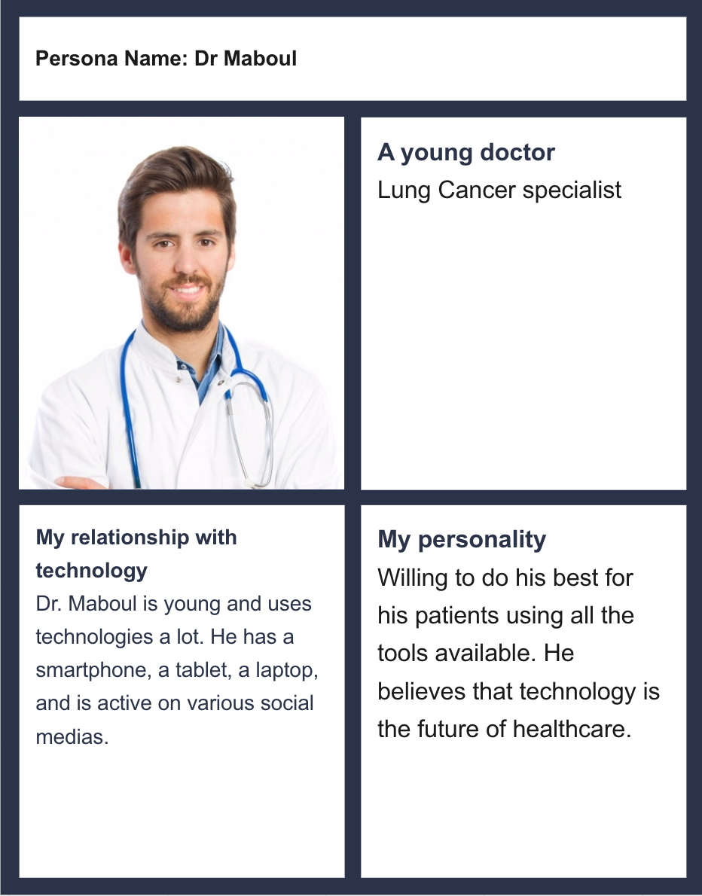
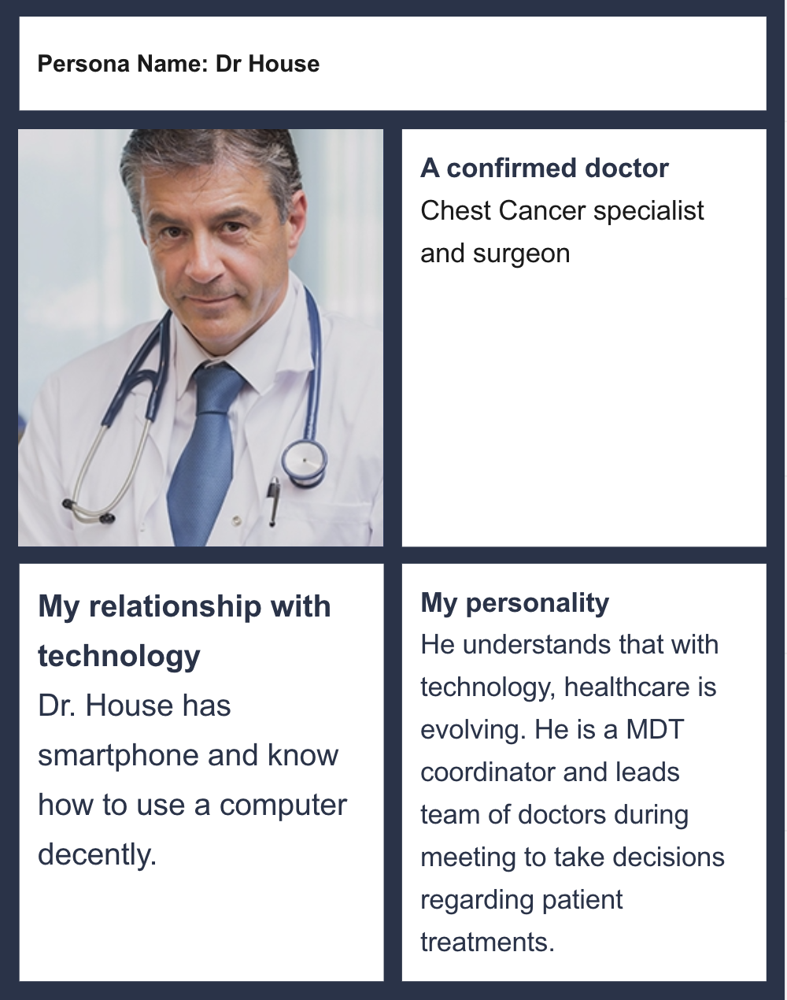
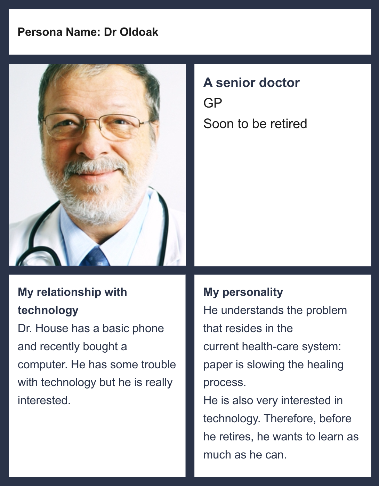
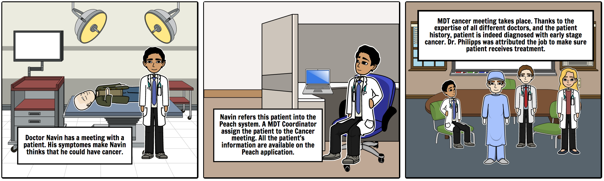
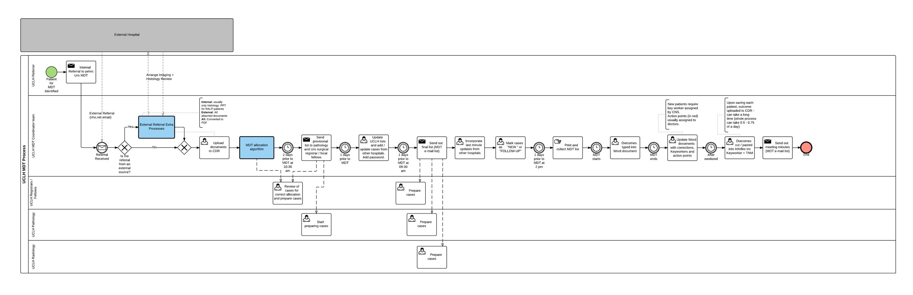

REQUIREMENTS
CLIENT
Dr. Navin Ramachandran
Our client is the UCLH (University College London Hospital), which implies that our application would significantly help patients and doctor. More specifically, a team called UCL Peach (Platform for Enhanced Analytics and Computational Healthcare), an open source community driven Data Science project by the Computer Science Department at UCL is helping out UCLH in managing this project, with us three students as one of the sub-teams. This application aims to potentially improve the standard procedures of medical registration of the patients, significantly speeding up the process where patient records go through the system. The client’s main representative is Dr. Navin Ramachandran, a dedicated doctor who has a passion towards this project and its success. He has been a great help to us, guiding us through the planning and coding of the project.
BACKGROUND
Problem Statement - What Problem Are We Solving?
Healthcare data is incredibly valuable, important and sensitive. Given these three attributes, it doesn't make sense, in the modern world, for this data to be collected, stored, transported and read-from a physical medium. Clearly there are several issues inherent in the current system.
These problems include:
| Security Issues associated with paper (eg. data unencrypted) | |
| Slow to transcribe data | |
| Slow to transfer data | |
| Awkward transition when data is needed digitally | |
| Leads to redundant or duplicated data, opening the door to consistency errors | |
| Subjectivity / illegibility of handwriting | |
| Requires physical storage space, which is more expensive then digital storage | |
| Physical assets are more readily lost / damaged |
How Does The Peach Project Help?
Many of the issues raised above are solved simply by converting from a physical medium to a digital one. That is where The Peach Project comes in. We are constructing a platform where healthcare professionals can perform all the tasks they do currently, but benefit from doing so digitally.
These benefits include:
| Access to current patient record at any time and from any location | |
| Patient data linked to Master Patient Index, meaning core patient data is pre-filled | |
| Pre-existing patient data is used to pre-fill forms, removing the need to transcribe duplicate data | |
| Form validation prevents entry of obviously incorrect data, leading to higher data quality | |
| Data cannot be lost or damaged | |
| Removes need for physical storage and supplies, reducing costs |
REQUIREMENTS GATHERING
At the begining of the project, our client us provided us a set of requirements. We misunderstood one (general workflow). Once we truly understood what it was about, we made some research and realized that this requirement could hardly be done within 6 months, considering all the other requirements we had. We talked to our client who has been very comprehensive. Hence, we took this off our requirement and replaced it with others (See requirements table).
PERSONA
We made three personas representing well our users. A young technology-aware doctor, a middle-age MDT coordinator, and a senior GP. This shows that ease of use is a major criteria for this application, and that portability and reponsiveness really are important.


STORYBOARD
Here is our main story board. Only a basic user role is represented, but all operations are suggested. Indeed, Doctor refer a patient, MDT coordinator assigns him to a meeting, meeting takes place, and jobs are assigned to doctors.
MoSCoW REQUIREMENT LIST
This is the most recent list of requirements. As with any agile-based project, this list has evolved over time alongside the changing needs of the client.
| ID | Requirement | Type | Component | Priority |
|---|---|---|---|---|
| 1 | Scheduler: The scheduler component is bascially a personal agenda. Every medical staff will have its own agenda, reuniting the meetings he is involved in, his reminders... and possibly others. | Category | Scheduler | Must |
| 1.1 | Scheduler shall have a nice and clear look, comparable to Google Calendar. | UI | Scheduler | Must |
| 1.2 | Scheduler shall have the ability to hold meetings and reminders. | Functional | Scheduler | Must |
| 1.3 | Admin shall be able to add/edit meetings. | Functional | Scheduler | Must |
| 1.4 | Meetings shall have a start/end time along with location. | Functional | Scheduler | Must |
| 1.5 | Meetings shall have a list of attending team members. | Functional | Scheduler | Should |
| 1.6 | Patients shall be dragged and dropped into meetings by Admin. | UI | Scheduler | Must |
| 1.7 | Several specialities shall be assign to meetings. | Functional | Scheduler | Must |
| 1.8 | Patients can be assigned to a particular speciality when assigned to a meeting. | Functional | Scheduler | Must |
| 1.8 | Referred patients should be automatically be in the list of patients to assign. | Functional | Scheduler | Must |
| 2 | Patient Search: Admin can search for patients in order to assign them to meetings, via drag and drop. | Category | Search | Must |
| 2.1 | Patients shall be searchable in real-time (without page reloading) | Functional | Search | Should |
| 2.2 | Admin shall be able to have a quick overview of patient history from the search result list. | Functional | Search | Should |
| 2.3 | Users shall be able to create new patients. | Functional | Search | Should |
| 3 | Jobs List: MDT (Multi-disciplinary team) coordinator shall be able to asign jobs to other team member. | Category | Jobs List | Must |
| 3.1 | MDT coordinator shall be able to search for other team members. | Functional | Jobs List | Must |
| 3.2 | MDT coordinator shall be able to assign Jobs to team members. | Functional | Jobs List | Must |
| 3.3 | MDT coordinator shall be able to delete Jobs. | Functional | Jobs List | Must |
| 4 | Workflow: We looked into developing a workflow manager, but it revealed itself very complicated. | Category | Worflow | Cancelled |
| 5 | Referral: The referral page is a massive form where MDT coordinators can refer new patients. | Category | Referral | Must |
| 5.1 | MDT coordinators should be able to search for patients and refer them. | Functional | Referral | Must |
| 5.2 | MDT coordinators should be able to create new patients. | Functional | Referral | Must |
| 6 | UI: The components built shall respecte the guidelines of the Peach project that may be find here. | Category | UI | Must |
| 7 | Integration: The components built shall be easy to integrate to the PEACH Project. | Category | Integration | Must |
| 8 | openEHR: The application should be connected to the openEHR api. All private information about patients (such as age for instance), should only be stored there. Any required information in the app should be direclty pulled form openEHR. | Category | API | Must |
| 9 | API: The application should have its own api to be consumed by the different front-end components. | Category | API | Must |
User cases
Type of users:
- MDT Co-ordinator
- Referrer (no access to MDT list)
- General Clinician (can refer and review MDT list)
- MDT Chair
- Admin (can review and make some changes to MDT list - these are to be confirmed)
General workflow of pages:
- Referral form
- Triage - of forms to allot to MDTs
- Case preparation - by juniors, preparing the referred patients details in time for MDT
- Live MDT - the actual MDT, where there are notes and outcomes recorded
- Confirmation - Post-MDT review to sign off (ie verify and close) each MDT case
- Jobs - list of generated jobs to be actioned
User case diagram for MDT-coordinators: 
All the details of the user cases can be find in the document sections. Click here to see the document.